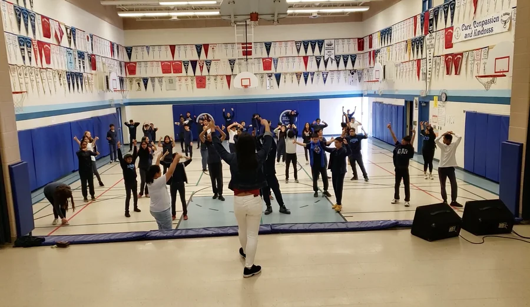

One useful thing this week
H4 uses hip hop to help students build confidence, learn skills and meet people. You can start in any crew, with or without dance experience.
Find your first task
Choose your crew
- Dance · Learn moves, build a crew and prepare for approved battles.
- Media · Draft flyers, videos and social posts.
- Ops · Help with announcements, school clubs, workshops and events.
Your first week
Meet your lead
If you’re new to H4, sign up first. Meet your lead and join the approved school chat.
Pick one task
Follow your lead’s instructions to sign in to H4Hours. Read the task and due date. Say yes or ask for a different task.
Do the work
Follow the steps. Ask your teacher before sharing a flyer, making an announcement or running a school activity.
Show your work
In H4Hours, send a short note, a safe link or a description. Keep private student information and unapproved photos out.
Log your time
Log the time you actually worked. H4 reviews your hours, and your school decides what it accepts.
See an example of good proof
Task: Ask about a morning announcement.
I asked the office on Tuesday. They said a teacher must send the script. I will ask my sponsor next.
A clear next step counts as useful work while you wait for approval.
Stuck? Tell your lead, “I need help with ___.” You can ask for a different task or a break. If you feel unsafe, go straight to a trusted adult or the H4 director.